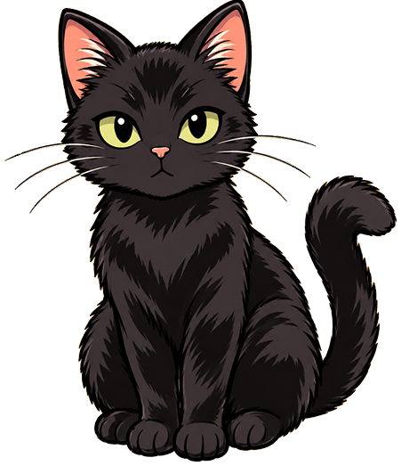

Nós, desenvolvedores do AnimalDex, criamos este aplicativo com intuito de ser uma ferramenta que traz a partir de um sistema "gamificado", com a presença de conquistas e medalhas com o mero ato de encontrar e fotografar animais uma razão para que as pessoas por meio dela descubram novos hobbys e interesses seja pela foto de caminhar ou descobrir mais sobre esses animais e sua biologia, sendo uma ferramenta que seja atrativa tanto para adultos como para crianças.
Através da jogatina efetuada dentro do AnimalDex, o usuário, depois de tantas horas andadas, será recompensado por conquistas e medalhas como a "Explorador Local" ou o "Olho de Águia", tudo isso como uma forma de impulsionar o seu ritmo e o mesmo se sentir motivado em fotografar e descobrir mais sobre os animais que perambulam pela sua cidade.
O AnimalDex é ainda uma ideia pequena porém prospera, em caso de problemas ou bugs, os mesmos serão corrigidos de antemão para proporcionar a todos aqueles que usam o AnimalDex, a melhor experiência recreativa possível.